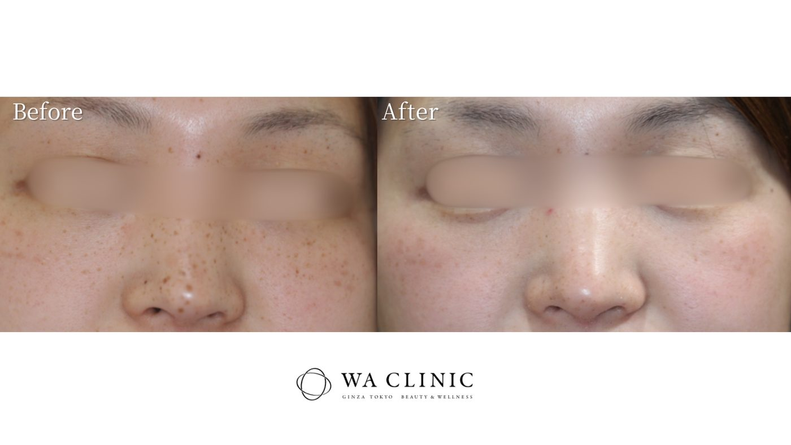
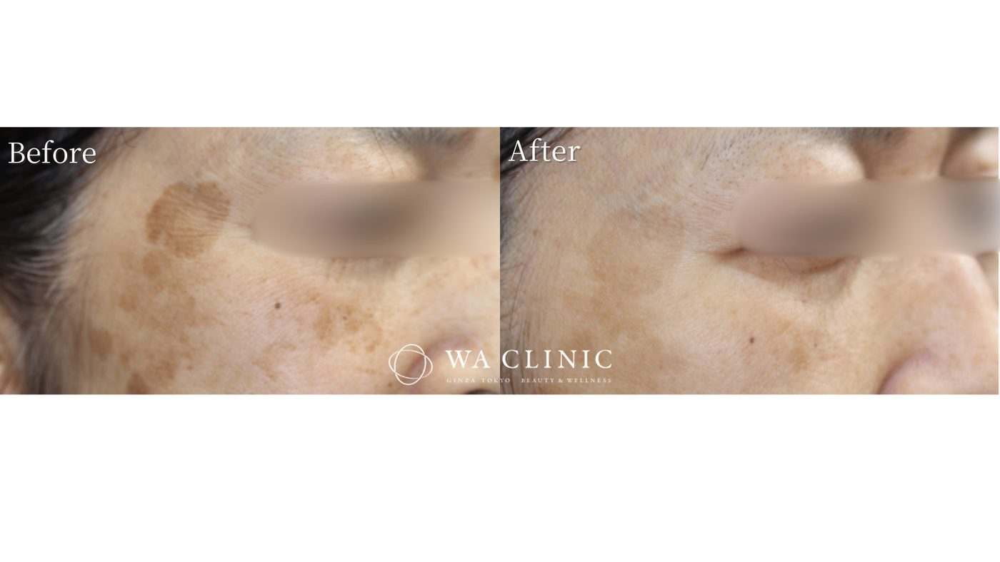

シミ・そばかす
メイクで隠すだけでなく、治療について相談したい。
 銀座駅B3出口 徒歩1分
※画像はイメージです
銀座駅B3出口 徒歩1分
※画像はイメージです
鏡を見るたび、気になる肌悩みに。
複数の肌悩みに向き合う、
全顔のBBL光治療。
初診当日に施術を受けられる方限定
VISIA肌診断がセット／おひとり様1回
YOUR SKIN CONCERNS
毎日のスキンケアだけでは気になることも、美容医療の視点で一緒に考えてみませんか。
メイクで隠すだけでなく、治療について相談したい。
頬の赤みなど、肌全体の色のばらつきが気になる。
明るく見える肌を目指して、ケアを見直したい。
シミ以外の肌悩みも、まとめて相談したい。
施術名だけでは、自分に何が合うのか分からない。
まずは1回受けてから、継続するか考えたい。
まずは医師が肌を診察。BBLが合うかどうかからご相談いただけます。
すべてのシミや肌悩みにBBLが適しているわけではありません。診察の結果、他の治療をご提案する場合があります。
CLINICAL CASES
WA CLINIC公式サイトで掲載している症例です。写真だけでなく、施術内容・回数・費用もあわせてご確認ください。
27歳・女性

効果や副作用には個人差があり、すべての方に同様の結果が得られるとは限りません。
50歳・女性

効果や副作用には個人差があり、すべての方に同様の結果が得られるとは限りません。
YOUR FIRST BBL
WA CLINICの肌づくりを、まずは体験していただくためのプランです。

気になる部位や、これまでの治療、目指したい肌の印象をお聞きします。施術内容・費用・注意事項をご説明したうえで、治療を検討します。

肌診断機VISIAでお肌の状態を撮影・記録。見た目だけでは捉えにくい肌の状態も確認し、診察や治療計画に役立てます。

医師が適応を確認したうえで、お顔全体にBBLを照射します。肌の状態やお悩みに合わせて照射設定を調整します。
カウンセリング + VISIA肌診断 + BBL(全顔)1回
初診当日に施術を受けられる方限定・おひとり様1回。施術は診察で適応があると判断された場合に行います。スポット照射は別料金のオプションです。
THE WA CLINIC APPROACH


WA CLINIC / GINZA
気になる症状だけでなく、肌の状態や治療歴も確認。お一人おひとりに必要な治療を検討します。
VISIAの撮影・記録を活用し、肌の状態を確認。ご自身の肌を知ることからケアを始めます。
施術後の肌の状態や医師の説明を踏まえて、ご自身のタイミングで継続をご検討いただけます。
銀座駅B3出口から徒歩1分。有楽町駅からも徒歩7分で、お仕事やお買い物の前後に通いやすい立地です。

MESSAGE FROM WA CLINIC
Bunnosuke Muto, M.D.
「美しさは、健康の上にしか成り立たない」
WA CLINICでは、美容皮膚科とウェルエイジングの視点から、お一人おひとりの肌と向き合っています。
今、気になっていること。これまでに受けてきた治療。これから、どのような肌を目指したいか。肌の状態だけでなく、ご希望や生活に合わせて、治療について一緒に考えます。
公式サイトの医師紹介を見る ↗ABOUT BBL
BBLは「Broad Band Light」の略称。WA CLINICでは、米国サイトン社製の光治療機器を使用しています。お顔全体に光を照射し、シミ・そばかす・赤みなど、複数の肌悩みにアプローチします。
気になる部分だけでなく、肌全体の状態を見ながら治療を考えることが特徴です。肌の色や状態、これまでの治療歴を確認し、照射の設定を調整します。
効果の現れ方や必要な回数は人によって異なります。初回1回での改善や、すべての肌悩みの解消を保証するものではありません。
パルスの制御
光を照射する時間や出力を制御する機能を備えています。肌の状態を確認しながら、照射条件を設定します。
フィルターの選択
複数のフィルターを用いて光の波長を選択。シミや赤みなど、治療対象に合わせた照射を検討します。
照射面の冷却
肌に触れる照射面を冷却しながら治療を行います。刺激や熱感を抑えるための機能であり、痛みや副作用がなくなるわけではありません。
PRICE & CONDITIONS
すべて税込。自由診療のため医療保険は適用されません。
通常合計 30,300円相当 (税込)
15,000円税込
初回体験限定セット 15,300円OFF
初診当日に施術を受けられる方限定で
VISIA肌診断が無料セット
オプションのスポット照射は5,000円。初回セットには含まれません。
BBL(全顔)：24,800円/回。VISIA肌診断：5,500円。初診・再診の診察料は0円です。
通院の目安は1か月間隔で5〜6回程度。必要な回数・間隔には個人差があり、継続は任意です。
初回15,000円+24,800円×4〜5回
114,200〜139,000円
YOUR VISIT

診察・肌診断を含む目安です。
診察内容や肌の状態により異なります。
メイクを落とし、清潔な状態で肌を確認できるよう準備します。
肌診断機VISIAでお肌の状態を撮影・記録し、肌の状態を確認します。
気になるお悩みやご希望、治療歴、内服薬などを確認します。施術内容・費用・注意事項についてご説明します。
適応を確認したうえで、お顔全体へ照射します。刺激や熱さが気になる場合は、遠慮なくお伝えください。
肌を落ち着かせ、ホームケアや注意事項をご説明します。気になることがあれば、その場でご相談ください。
AFTER YOUR TREATMENT
基本的には施術後から可能です。赤みや刺激など、肌の状態によっては医師の指示に従ってください。
シミの部分が一時的に濃く見えたり、かさぶたができたりすることがあります。無理にはがさず、強くこすらないでください。
シミの再発や色素沈着を防ぐため、日焼け止めなどで紫外線を防いでください。気になる経過はクリニックにご相談ください。
経過や回復までの期間には個人差があります。症状が強い場合や長引く場合は、自己判断せず当院へご相談ください。
QUESTIONS & ANSWERS
BBL(全顔)1回、VISIA肌診断(医師肌診断付)、初診料が含まれます。2026年11月30日まで、初診当日に施術を受けられる方限定・おひとり様1回です。スポット照射等のオプションは別料金です。
2026年11月30日まで。初診当日に施術を受けられる方限定で、VISIA肌診断が無料セット。初診の方・おひとり様1回。専用Webフォームからご予約いただくか、ご予約時に「初回体験を希望」とお申し出ください。施術は医師が適応を確認したうえで行います。スポット照射などのオプションは別料金です。
今回の無料セットは、初診当日に施術を受けられる方が対象です。肌診断のみの場合は通常5,500円です。医師の診察により当日施術ができない場合の費用は、検査・施術を受ける前にご確認ください。
照射時に輪ゴムで弾かれるような刺激を感じることがあります。感じ方には個人差があります。冷却しながら照射しますが、強い刺激や熱さを感じた場合はスタッフにお伝えください。
赤み、かさぶた、ひりひり感などが生じる場合があります。1週間ほどで落ち着くことが多いですが、程度や経過には個人差があります。予定がある場合は、ご予約・診察時にご相談ください。
当院では1か月間隔で5〜6回程度を目安にご案内しています。必要な回数・間隔は肌の状態や治療の目的により異なり、1回での効果を保証するものではありません。診察時に治療計画をご相談ください。
ご相談いただけます。見た目が似ていても、シミの種類や肌の状態によって適した治療は異なります。自己判断せず、まずは医師の診察をお受けください。BBL以外の治療をご案内する場合もあります。
施術の種類、受けた時期、現在の肌の状態によって異なります。他院での施術も含め、治療歴を診察時にお伝えください。併用の適否、間隔や費用をご案内します。
基本的には施術後から可能です。ただし、赤みや刺激など肌の状態によっては医師の指示に従ってください。
施術後1週間ほどは、シミの部分が一時的に濃く見える場合があります。かさぶたができた場合も、無理にはがさず、強くこすらないようにしてください。気になる経過がある場合は当院へご連絡ください。
日焼け直後、光過敏症、光に反応する薬の内服中、妊娠中の方、強い炎症のある部位などは施術をお断りする場合があります。持病・内服薬・肌の状態について、必ず事前にお伝えください。
男性もご相談いただけます。肌悩みや治療歴を伺い、施術の適応を確認します。
現金、各種クレジットカード(VISA、Mastercard、JCB、AMEX、Diners)、銀聯、WeChatPay、AliPayをご利用いただけます。ご希望の支払い方法はご予約時にも確認できます。
専用駐車場はありません。公共交通機関または近隣のコインパーキングをご利用ください。銀座駅B3出口から徒歩1分、有楽町駅中央口から徒歩7分です。
TREATMENT INFORMATION
治療内容・主なリスク・費用を理解したうえで、施術をご検討ください。
BBL(Broad Band Light)による光治療です。肌の状態や治療対象に合わせて照射の設定を調整し、お顔全体へ照射します。自由診療のため、医療保険は適用されません。
1か月間隔で5〜6回程度。必要な回数・間隔は肌の状態や目的により異なります。効果には個人差があり、同様の結果や1回での改善を保証するものではありません。
赤み、かさぶた、ひりひり感など。1週間ほどで落ち着くことが多いですが、程度や期間には個人差があります。症状が強い、または長引く場合は当院へご相談ください。
日焼け直後、光過敏症、光に反応する薬を内服中、妊娠中の方、強い皮膚炎症がある部位など。持病・薬・他の施術歴も含め、診察時に確認します。
治療後1か月間は、日焼け止めなどで紫外線対策を行ってください。シミが一時的に濃く見えることがあります。かさぶたは無理にはがさず、肌を強くこすらないでください。
初回体験：BBL(全顔)1回15,000円(初診当日の施術限定・おひとり様1回・カウンセリング/VISIA代込み)。通常：BBL(全顔)1回24,800円。スポットオプション：5,000円。初回体験の適用条件と継続時の費用例は料金のご案内をご確認ください。
ACCESS / GINZA

FIRST STEP
2026年11月30日まで。初診当日に施術を受けられる方限定で、VISIA肌診断が無料セット。初診の方・おひとり様1回。専用Webフォームからご予約いただくか、ご予約時に「初回体験を希望」とお申し出ください。施術は医師が適応を確認したうえで行います。スポット照射などのオプションは別料金です。